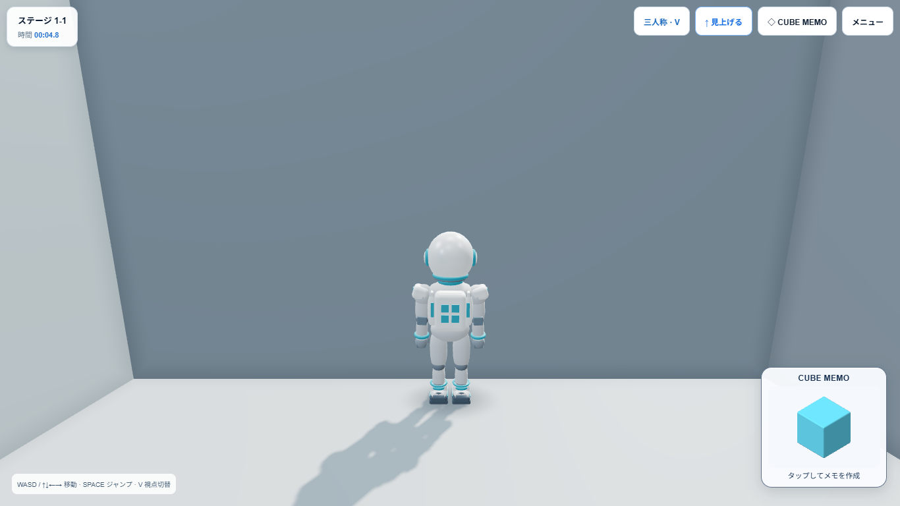
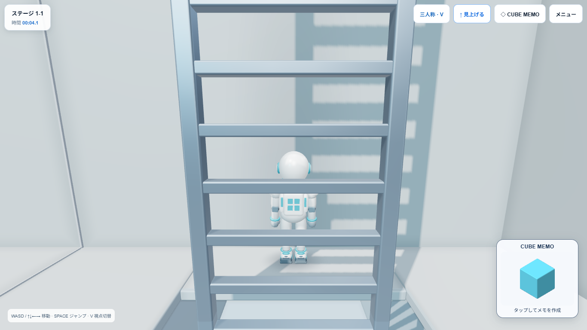

READY FOR USER QA · 2026-09-12
旧出口はハッチ端から中心まで0.20、Player半径は0.34。身体全体が床に載る前に梯子状態を解除していました。さらに解除時にCamera YawをPlayerへコピーするため、カメラが後ろ向きの場合、押し続けたWで再び穴へ進み落下しました。
修正前ROUTE 1-1ではY=3.06で解除後、Y=-2.94まで落下することをブラウザで再現。Standard代表梯子も床厚0.12・ハッチ形状・水平オフセットは同じでした。通常の前向きカメラでは問題が見えにくい共通処理の不備です。
Stage形状を変えず、実Floor Colliderで安全な出口を検査します。1-1の出口は [24, 3.0602, 15.51]。ハッチ端から中心まで0.44を確保し、半径0.34に対し0.10の余裕があります。壁との干渉も検査します。
0.22秒の補助移動中は梯子への接続を維持。身体全体の床支持を確認してから接地・解除します。Playerを安全な退出方向へ向け、Cameraは0.30秒で追従。LOOK UPの保存視点を上書きしません。
Microsoft Edge / Playwrightによる実ブラウザのキーボード・マウス操作。物理スマートフォンは未確認。Production bundleを使用し、テスト専用ページ内でゲームインスタンスの参照を一時公開。製品コードの入力・状態遷移関数は置換していません。
最初の梯子付近への位置設定のみfixture。1-1の10回の間はテレポートやResetなしで、実際に下り、再度上りました。W継続・途中停止・横向きCamera・Third-person・POVを含みます。上端退出後もWを1.1秒継続し、落下なしを検査しました。
1-5：全2梯子、1-10：全3梯子で上り・下りPASS。Standard代表（ID 2）の4階分の梯子もPASS。代表梯子間の移動はfixtureによる配置であり、ステージ全行程の通しプレイではありません。
上階の側方からW＋SpaceによるJump Catch：1-1 / 1-5 / 1-10 / Standard ID 2でPASS。掴んだ後0.3秒保持、Sで下りを確認。初回テストはfixtureの接地前にJumpを送る可能性があったため、接地・上昇を確認するテストへ修正しました。Jump/Catch処理自体は変更していません。
安全な上階床、Collider全体の支持、退出経路の障害物、Answer Terminal・Boost干渉を検査。半径0.34、検査余裕0.08、床厚0.12。現在の全出口は水平方向1.14の短い補助移動です。
| Stage | Ladder | Top Y | Exit XYZ | Result |
|---|


到達・落下の判定はスクリーンショットだけでなく、各試行の位置・状態で検査しています。
325 tests / 27 files PASS · TypeScript / Production Build PASS
新規44テスト：全ROUTE出口・Standard出口、安全支持、短時間補助、無効床の検出、Camera追従とLOOK UP保護。既存Move / Jump / Ladder Catch / Quiz / Memo / Save等の回帰テストもPASS。
Jump距離・高さ、通常Gravity、Player速度、BOOST速度、Stage正解形、選択肢、Memo、Answer Point、Correct Scene、Home、Save、SDK、Robloxは変更していません。既存の500kB chunkサイズ警告は残っています。